أرصاد SALT لبقايا المستعر الأعظم MCSNR J01277332 والثنائي السيني من نوع Be المرتبط بها SXP 1062 في SMC
الملخص
نعرض نتائج المطيافية الضوئية لبقايا المستعر الأعظم في سحابة ماجلان الصغرى (SNR) MCSNR J01277332 وللنجم المانح للكتلة من نوع Be، 2dFS 3831، في الثنائي السيني العالي الكتلة SXP 1062 المرتبط بها، وقد أُجريت الأرصاد باستعمال التلسكوب الجنوب أفريقي الكبير (SALT). وباستعمال أطياف شقية طويلة عالية الاستبانة، قسنا سرعة تمدد غلاف SNR فوجدناها ، مما يشير إلى أن MCSNR J01277332 في الطور الإشعاعي. ووجدنا أن نسب الخطوط المرصودة في طيف SNR يمكن فهمها إذا كان الوسط بين النجمي المحلي مؤينا بفعل 2dFS 3831 و/أو نجوم OB المحيطة ببقايا المستعر. ونقترح أن MCSNR J01277332 نتجت عن انفجار مستعر أعظم داخل فقاعة كوّنتها الريح النجمية لسلف المستعر الأعظم، وأن الفقاعة كانت محاطة بغلاف عظيم الكتلة لحظة انفجار المستعر الأعظم. وقدرنا عمر MCSNR J01277332 بنحو yr. ووجدنا أن طيف 2dFS 3831 يتغير مع الطور المداري. وعلى وجه التحديد، انخفض العرض المكافئ لخط انبعاث H بنسبة في المئة خلال d بعد مرور النجم النيوتروني بالحضيض، ثم عاد تقريبا إلى قيمته الأصلية خلال d التالية. كذلك فإن طيف 2dFS 3831 الذي حُصل عليه أقرب ما يكون إلى حقبة الحضيض (بعد الحضيض بنحو ثلاثة أسابيع) يبيّن خط انبعاث ملحوظا لـ He ii 4686، وقد اختفى خلال نحو أسبوعين بعد ذلك. ونفسر هذه التغيرات بأنها نتيجة اضطراب مؤقت وتسخين للقرص عند عبور النجم النيوتروني خلاله.
keywords:
النجوم: ذات خطوط انبعاث، Be – النجوم: منفردة: 2dFS 3831 – النجوم: عظيمة الكتلة – ISM: بقايا المستعرات العظمى – الأشعة السينية: الثنائيات.1 المقدمة
قد يتطور نظام ثنائي ينجو من انفجار مستعر أعظم (SN) لأحد مكوناته إلى ثنائي سيني يتراكم فيه الجرم النجمي المدمج الباقي (نجم نيوتروني أو ثقب أسود) مادة من النجم العادي (عظيم الكتلة أو منخفض الكتلة). إن المقياس الزمني النموذجي لتكوّن الثنائيات السينية المحتوية على نجوم نيوترونية، وهو yr (مثل Tauris & van den Heuvel 2006)، أطول بمرتبة إلى ثلاث مراتب مقدار من المقياس الزمني لقابلية رؤية بقايا المستعرات العظمى (SNRs)، وهو yr (مثل Lozinskaya 1992)، مما يوحي بأنه لا ينبغي رصد أي من هذه الثنائيات السينية داخل SNRs. ومع ذلك، عُثر على عدة ثنائيات سينية ذات نجوم نيوترونية (NSXRBs) مرتبطة ببقايا مستعرات عظمى، وهو ما يتحدى التصور التقليدي لمقاييس زمن تشكل هذه الأجرام ولا يزال ينتظر تفسيرا.
من بين ارتباطات NSXRB/SNR المعروفة، وُجد ارتباط واحد فقط في مجرتنا، وهو SNR G322.1+00.0/Cir X-1 (Heinz et al. 2013; Linares et al. 2010). ورُصد اثنان آخران في سحابة ماجلان الصغرى (SMC): MCSNR J01277332/SXP 1062 (Hénault-Brunet et al. 2012; Haberl et al. 2012) و MCSNR J01037201/SXP 1323 (Gvaramadze, Kniazev & Oskinova 2019). كما وُجد اثنان آخران في سحابة ماجلان الكبرى: MCSNR J05366735/CXOU J053600.0673507 (Seward et al. 2012; Corbet et al. 2016; van Soelen et al. 2019) وMCSNR J05136724/XMMU J051342.6672412 (Maitra et al. 2019). ويمكن أن توفر دراسة هذه الأنظمة وما يماثلها معلومات مفيدة عن الخصائص المغناطيسية والدورانية للنجوم النيوترونية الفتية، وسرعات ركلات المستعرات العظمى، ومعلمات الثنائيات السابقة للمستعر الأعظم، و تطور المدارات اللاحقة للمستعر الأعظم في NSXRBs (انظر مثلا Haberl et al. 2012; González-Galán et al. 2018; Wang & Tong 2020; Ho et al. 2020).
نعرض في هذه الورقة نتائج أرصاد SNR MCSNR J01277332 في جناح SMC، والنجم المانح للكتلة 2dFS 3831 في NSXRB المرتبطة بها SXP 1062، باستعمال التلسكوب الجنوب أفريقي الكبير (SALT). وفي القسم 2، نراجع بإيجاز ما هو معروف سلفا عن هذه الأجرام. ويصف القسم 3 أرصادنا واختزال البيانات. أما النتائج المستحصلة فتعرض في القسم 4 وتناقش في القسم 5. ونقدم خلاصة في القسم 6.
2 MCSNR J01277332/SXP 1062: بيانات رصدية
اكتُشف الثنائي السيني ذو النجم النيوتروني SXP 1062 على يد Hénault-Brunet et al. (2012) في جناح SMC أثناء أرصاد منطقة التشكل النجمي عظيمة الكتلة NGC 602 باستخدام Chandra وXMM-Newton. ومثل معظم NSXRBs في SMC، تنتمي SXP 1062 إلى صنف الثنائيات السينية من نوع Be (BeXBs)، التي تتكون من نجم نيوتروني يتراكم من القرص المحيط بنجم Be. ويدور النجم النيوتروني في SXP 1062 حول النجم B0.5(III)e 2dFS 3831 (Hénault-Brunet et al. 2012) بفترة مدارية قدرها d (Schmidtke, Cowley & Udalski 2012, 2019؛ انظر أيضا القسم 4.2)، وتجعل فترة دورانه البالغة s من SXP 1062 ثالث أطول BeXB فترة في SMC (Haberl & Sturm 2016).
قدم Hénault-Brunet et al. (2012) أطياف 2dFS 3831 التي حُصل عليها بأداة VLT-FLAMES في 2010 أكتوبر 25، وبأداة المجال ذي الألياف المتعددة بقطر 2 درجات (2dF) في التلسكوب الأنغلو-أسترالي في 1998 سبتمبر (الطيف الأزرق) و1999 سبتمبر (الطيف الأحمر). وأظهرت هذه الأطياف أن خطي H وH انبعاثيان خالصان، وكشفت وجود انبعاث في قلوب خطوط بالمر الأخرى وامتلاء ظاهريا في خطوط امتصاص He i. كذلك رُصدت خطوط انبعاث Fe ii 4179 وFe ii 4233 وخط امتصاص ضعيف لـ He ii 4542 في طيف VLT-FLAMES، ووجدت إشارة إلى خط He ii 4696 ضعيف في طيف 2dF. جمع González-Galán et al. (2018) قياسات العرض المكافئ (EW) لخط H في أطياف 2dFS 3831 التي حُصل عليها في 1999–2016، و وجدوا أن قيمته المطلقة ازدادت من Å في 199911 1 لاحظ أن González-Galán et al. (2018) أشاروا خطأ إلى تاريخ هذا القياس على أنه 2010 أكتوبر 25، في حين أنه حُصل عليه فعليا في 1999 سبتمبر. إلى Å في 2014، ثم انخفضت إلى Å خلال السنتين التاليتين بعد اندلاع الأشعة السينية في منتصف 2014 (انظر أيضا القسم 4.2).
اكتشف Hénault-Brunet et al. (2012) أيضا SNR حول SXP 1062، وقدموا صور H و [S ii] و[O iii] من مسح خطوط الانبعاث في سحابتي ماجلان (MCELS)، وصورة H الأعلى استبانة من مسح خطوط الانبعاث في سحابتي ماجلان 2 (MCELS2). إن غلاف SNR (ذي القطر الزاوي دقيقة قوسية) مرئي بوضوح في H و [O iii]، لكنه يكاد لا يُرصد في [S ii]. ويبدو ذلك غير مألوف، لأنه يُعتقد أن نسبة شدة خطي انبعاث [S ii] 6716، 6731 إلى H في SNRs ينبغي أن تكون كبيرة إلى حد ما (؛ مثلا Mathewson & Clarke 1973; Fesen, Blair & Kirshner 1985). وقد فسّر Hénault-Brunet et al. (2012) انخفاض شدة خطوط انبعاث [S ii] بوصفه نتيجة للتأين الضوئي لغلاف SNR وللوسط بين النجمي المحلي (ISM) بواسطة 2dFS 3831 و/أو بإشعاع مؤين من نجوم حارة عظيمة الكتلة في العنقود النجمي NGC 602 ومجموعة غنية من نجوم OB داخل الغلاف العملاق SMC-SGS 1 إلى شمال NGC 602 (Fulmer et al. 2020). ويظهر غلاف SNR بأكمل صورة في صورة [O iii]، حيث يتغير نصف قطره من ثانية قوسية عند الحافة الشمالية الغربية إلى ثانية قوسية في الاتجاه المقابل.
اكتُشفت MCSNR J01277332 بصورة مستقلة على يد Haberl et al. (2012). وإضافة إلى صور MCELS لـ SNR، قدموا أيضا صورها الراديوية عند 843 MHz من MOST (تلسكوب مولونغلو التركيبي)، وصورها السينية من XMM-Newton. وفي الراديو يظهر SNR بنية غلافية واضحة بالحجم نفسه للغلاف الضوئي، في حين يبدو في الأشعة السينية على هيئة انبعاث منتشر مرقع محصور داخل الغلاف الضوئي. كما رُصدت MCSNR J01277332 بمصفوفة التلسكوب الأسترالي المدمجة (ATCA) عند MHz (Haberl et al. 2012). وبدمج بيانات ATCA وMOST، استنتج Haberl et al. (2012) دليلا طيفيا لـ SNR () مقداره ، مما يدل على الطبيعة غير الحرارية لانبعاثها الراديوي.
وباستخدام سطوع السطح الأقصى المقاس للحافة الشمالية الشرقية من MCSNR J01277332 و السماكة الظاهرية لغلاف SNR، وهي 5–10 في المئة من نصف قطر الغلاف، استنتج Hénault-Brunet et al. (2012) الكثافة العددية للغلاف وكتلته، وهما و على التوالي. ثم، بافتراض أن MCSNR J01277332 في طور سيدوف، أي إن الطاقة الحركية للغلاف تساوي في المئة من طاقة انفجار SN (المفترضة مساوية لـ erg)، استنتجا أن سرعة تمدد SNR وعمرها يساويان، على التوالي، و yr. وبالمثل، وبافتراض أن SNR في طور سيدوف وباستخدام درجة حرارة البلازما المصدرة للأشعة السينية البالغة 0.23 keV (المستحصلة من نمذجة الطيف السيني)، استنتج Haberl et al. (2012) عمرا قدره yr، وهو ما يعني .
| Date | Grating | Exposure | Spectral scale | Spatial scale | PA | Slit | Seeing | Spectral range |
|---|---|---|---|---|---|---|---|---|
| (sec) | (Å pixel-1) | (arcsec pixel-1) | () | (arcsec) | (arcsec) | (Å) | ||
| 2012 October 13 | PG2300 | 4002 | 0.35 | 0.255 | 123 | 0.6 | 3.0 | 38174913 |
| 2014 June 27 | PG2300 | 4002 | 0.34 | 0.255 | 123 | 1.5 | 1.3 | 38144904 |
| 2014 July 09 | PG2300 | 4002 | 0.34 | 0.255 | 123 | 1.5 | 2.2 | 38144904 |
| 2016 November 1 | PG2300 | 11004 | 0.27 | 0.255 | 90 | 1.25 | 1.6 | 59006760 |
| 2018 December 21 | PG2300 | 15001 | 0.26 | 0.510 | 125 | 2.00 | 2.1 | 60706900 |
| 2020 December 24 | PG900 | 15001 | 0.97 | 0.255 | 90 | 1.25 | 1.2 | 36196708 |
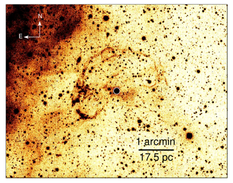
في الشكل 1، نعرض صورة MCELS2 في H لـ MCSNR J01277332. تظهر SNR على هيئة غلاف خيطي شبه دائري غير مكتمل. أما النجم الساطع، 2dFS 3831 (الموسوم بدائرة بيضاء)، قرب مركز SNR فهو مانح الكتلة في SXP 1062. ويتجه الجانب الشرقي (الساطع) من SNR نحو منطقة H ii LHA 115-N 90 المثارة بالعنقود النجمي عظيم الكتلة NGC 602. وقد ينجم عدم تماثل السطوع هذا عن ازدياد الكثافة العددية للوسط بين النجمي المحلي (ISM) باتجاه منطقة H ii ، أو عن تفاعل موجة صدمة SN مع تدفق غازي تقوده نجوم عظيمة الكتلة في NGC 602. وفي الحالتين، تكون موجة الصدمة أبطأ بعض الشيء في الاتجاه الشرقي، وهو ما يمكن أن يفسر إزاحة 2dFS 3831 عن المركز الهندسي لـ SNR باتجاه حافتها الأكثر سطوعا.
فيما يلي، نفترض أن SMC تقع على بعد 60 kpc (Hilditch, Howarth & Harries 2005). وعند هذا البعد تقابل 1 دقيقة قوسية pc. وبناء على ذلك، فإن نصف القطر الخطي لـ SNR هو pc.
3 الأرصاد
حصلنا على أطياف شقية طويلة لـ MCSNR J01277332 باستخدام مطياف Robert Stobie (RSS; Burgh et al. 2003; Kobulnicky et al. 2003) المثبت على SALT (Buckley, Swart & Meiring 2006; O’Donoghue et al. 2006). أُجريت الأرصاد في 2016 و2018 و2020. في 2016، حُصل على الأطياف باستخدام محزوز PG2300 باستبانة طيفية FWHM قدرها FWHM= Å. وفي 2018، استخدمنا المحزوز نفسه مع عرض شق أكبر، مما أعطى استبانة طيفية FWHM مقدارها Å. وسنشير فيما بعد إلى هذه الأطياف بأنها أطياف عالية الاستبانة. وفي 2020 حصلنا على طيف آخر باستعمال محزوز PG900، مما أتاح لنا تغطية مجال طيفي أوسع بكثير، ولكن باستبانة طيفية أدنى FWHM قدرها Å (وسنشير إليه فيما بعد بأنه طيف منخفض الاستبانة).
في جميع هذه الأرصاد وُضع الشق على 2dFS 3831 ووجّه بطريقة تجعله يقطع ألمع العقد في الحافتين الشرقية والجنوبية الشرقية للغلاف (انظر الشكل 1 و اللوحة اليمنى السفلى من الشكل 2). وعلى وجه التحديد، في 2016 و2020 وُجّه الشق في الاتجاه غرب-شرق، أي عند زاوية موضع (PA) مقدارها PA=90°(مقاسة من الشمال نحو الشرق)، في حين وُجه في 2018 عند PA=125°. وكان هدف هذه الأرصاد محاولة تحديد سرعة تمدد غلاف SNR (كما فعلنا ذلك لـ MCSNR J01037201; Gvaramadze et al. 2019) والتحقق مما إذا كان خط H في طيف 2dFS 3831 يواصل تغيير EW.
ولمعايرة الأطوال الموجية للأطياف، أُخذ طيف قوس لمصباح Xe مباشرة بعد إطارات العلم. ورُصدت نجوم معيارية مطيافية ضوئية بالإعدادات الطيفية نفسها من أجل معايرة الفيض النسبية.
اختُزلت الأطياف المستحصلة أولا باستخدام خط معالجة بيانات SALT العلمي (Crawford et al. 2010)، ثم اختُزلت لاحقا كما هو موصوف في Kniazev et al. (2008). ولا تكون معايرة الفيض المطلق ممكنة باستخدام SALT لأن فتحة دخول التلسكوب غير الممتلئة تتحرك أثناء الأرصاد. ومع ذلك، يمكن إجراء تصحيح نسبي للفيض لاستعادة شكل الطيف باستخدام المعايير المطيافية الضوئية المرصودة.
استخرجنا أيضا من أرشيف SALT ثلاث مجموعات رصدية لـ 2dFS 3831 حُصل عليها في 2012 و2014. وقد عُرضت الأطياف المحصلة في 2012 في Sturm et al. (2013)، في حين استُخدمت تلك المحصلة في 2014 و2016 في Gonzáles-Galán et al. (2018) لدراسة تغيرات EW(H ) في طيف 2dFS 3831. ومن أجل هذه الورقة، اختزلنا فقط الأجزاء الزرقاء من هذه الأطياف واستخدمناها لتحليل 2dFS 3831 (انظر القسم 4.2). وبما أن الأجزاء الحمراء من الأطياف لا تغطي إلا المنطقة الطيفية حول خط H ، فقد استخدمنا في تحليلنا القيم المنشورة لـ EW(H ) من الأدبيات. أما قيم FWHM للاستبانة الطيفية لطيفي 2012 و2014 فهي و Å، على التوالي.
لاحظ أن Sturm et al. (2013) وGonzáles-Galán et al. (2018؛ انظر جدولهما A1) يوردان زوايا موضع غير صحيحة لأرصادهما. أما القيم الصحيحة فتُعطى في الجدول 1 إلى جانب تفاصيل أخرى لكل الأرصاد الستة المستخدمة في هذه الورقة.
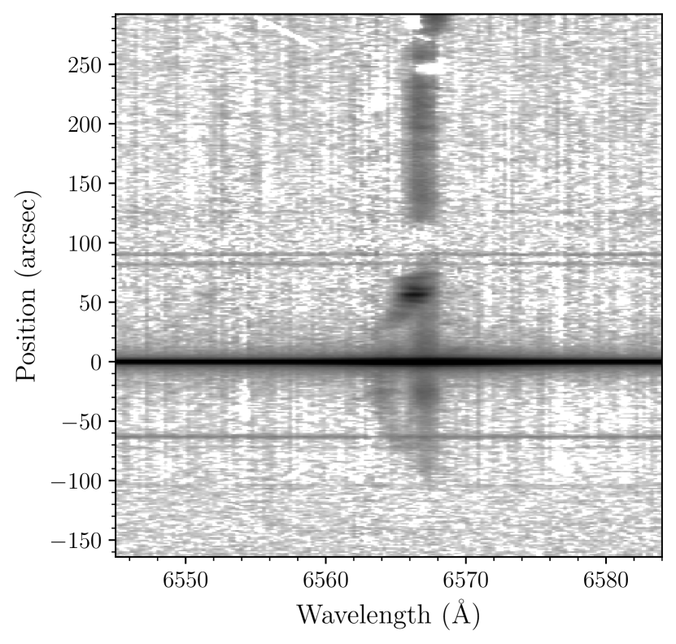
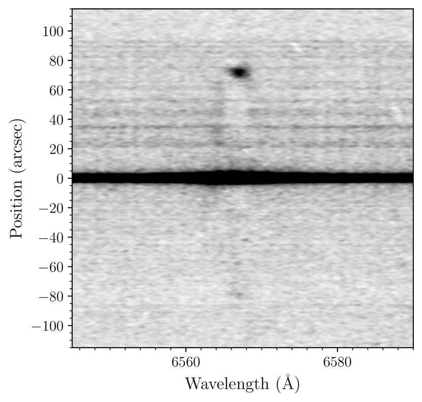
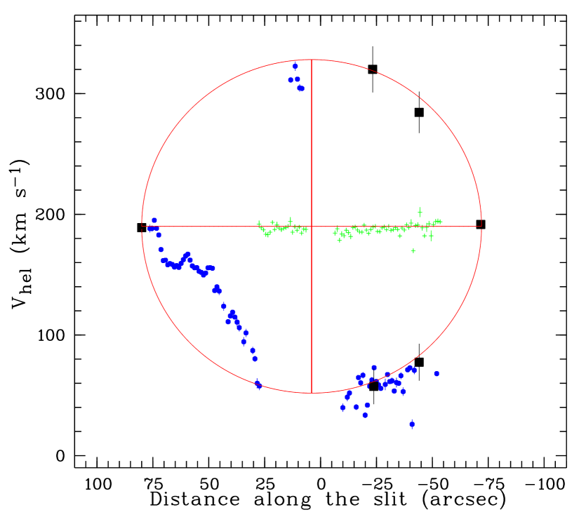
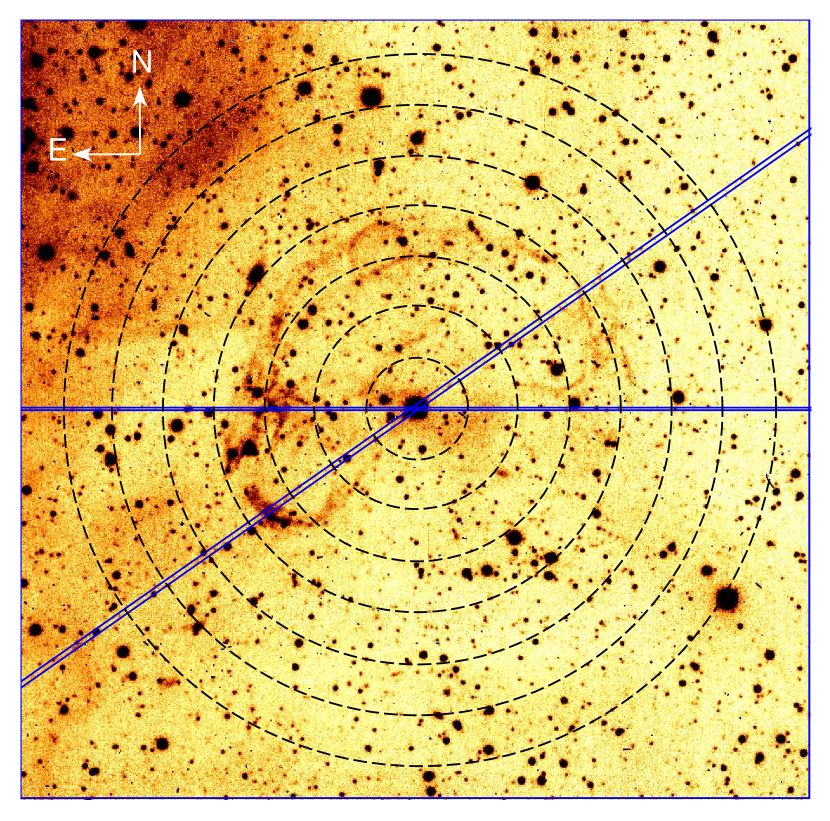
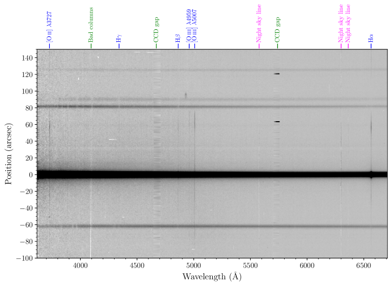
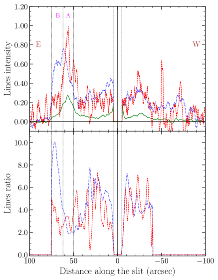
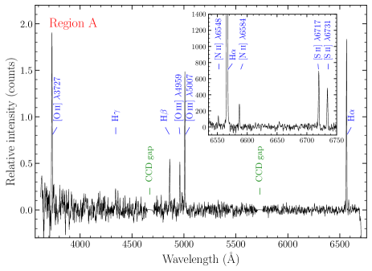
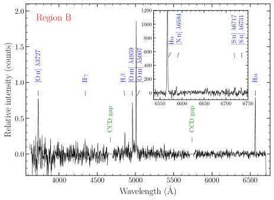
4 النتائج
4.1 MCSNR J01277332
في اللوحات العليا من الشكل 2، نعرض مقاطع من أطياف 2D عالية الاستبانة لغلاف SNR حُصل عليها لاتجاهين للشق: PA=90° (اللوحة اليسرى) وPA=125° (اللوحة اليمنى). وتبين اللوحة اليسرى أن انبعاث H على امتداد الشق يأتي من مكونين رئيسيين: مكون شبه مستقيم (عمودي) (ننسبه إلى ISM الخلفي؛ انظر أدناه)، و قوس منزاح نحو الأزرق ذو عقدة ساطعة على حافته الشرقية (ننسب هذا المكون إلى الجانب القريب من غلاف SNR). وهناك أيضا جزء من الجانب منزاح نحو الأحمر (المبتعد) من الغلاف عند ثانية قوسية. ويمتد مكون الانبعاث القوسي على امتداد الشق بين و ثانية قوسية. وتبين اللوحة اليمنى أننا عند PA=125° نرى كلا الجانبين المبتعد والمقترب من الغلاف. وتظهر أيضا عقدة ساطعة عند ثانية قوسية، تقابل الحافة الجنوبية الشرقية لغلاف SNR. وفي الاتجاه الشمالي الغربي يمتد الغلاف إلى ثانية قوسية. لاحظ أن الطيف الثاني (PA=125°) أُخذ بتعريض أقصر بمقدار مرة، وبشق أعرض بمقدار 1.6 مرة، وبرؤية أسوأ بنحو عامل 1.3 (انظر الجدول 1). وهذا يفسر سبب كون انبعاث ISM الخلفي مرئيا بضعف فقط في هذا الطيف (مثلا عند ثانية قوسية).
لاشتقاق سرعة تمدد غلاف SNR، ، قسنا السرعة الشعاعية المركزية الشمسية، ، لخط H على امتداد الشقين باستخدام أطياف 2D عالية الاستبانة. و رُسمت نتائج القياسات في اللوحة السفلى اليسرى من الشكل 2. وتُظهر المربعات السوداء ذات أشرطة الخطأ السرعات الشعاعية المركزية الشمسية المقاسة عند عدة مواضع في طيف 2D المحصل والشق موجّه عند PA=125°. ويمكن أن نرى أن نقاط البيانات هذه تنسجم جيدا مع دائرة. وبافتراض، لغرض التبسيط، أن SNR تتمدد بتماثل كروي، نجد وأن السرعة النظامية للغلاف هي .
وبالمثل، قسنا أيضا باستخدام طيف 2D الثاني عالي الاستبانة (PA=90°). ورُسمت هذه القياسات في اللوحة نفسها بنقاط (زرقاء) ذات أشرطة خطأ (وفي معظم الحالات تكون الأشرطة أقصر من حجم النقاط). وعموما، تقع هي أيضا على الدائرة بشكل جيد، باستثناء نقاط بيانات في المجال بين و+70 ثانية قوسية، حيث تبدي قيما أخفض منهجيا. ويشير هذا الانحراف إلى أن الجانب الشرقي من الغلاف يتمدد بسرعة أقل بعض الشيء من الجانب المقابل (قارن بالقسم 3)، وهو ما يتسق مع موضع 2dFS 3831 غير المركزي داخل SNR. وقد ينجم أيضا جزئيا عن حركات غير شعاعية بسبب تشوهات واسعة النطاق في الغلاف، كما يدل عليه تركيبه المعقد على الجانب الشرقي من 2dFS 3831 (انظر اللوحة اليمنى السفلى من الشكل 2). وتقابل الصلبان (الخضراء) الممتدة أفقيا من الغرب إلى الشرق المكون المستقيم لانبعاث H في طيف 2D عالي الاستبانة عند PA=90°. و إن متوسط لهذا المكون، وهو ، يساوي للغلاف و لمنطقة H ii شرق SNR (انظر اللوحتين العليا اليسرى والسفلى اليمنى من الشكل 2؛ قارن Nigra et al. 2008). ومن ثم نفسر هذا المكون بأنه انبعاث خلفي غير مرتبط بـ SNR.
| Region A | Region B | |
| (Å) Ion | F()/F(H) | F()/F(H) |
| 3727 [O ii] | 3.540.25 | 3.920.57 |
| 4340 H | 0.250.04 | 0.550.10 |
| 4861 H | 1.000.09 | 1.0000.16 |
| 4959 [O iii] | 0.670.06 | 2.900.35 |
| 5007 [O iii] | 2.420.16 | 7.990.92 |
| 6300 [O i] | 0.070.01 | — |
| 6548 [N ii] | 0.060.01 | — |
| 6563 H | 2.980.19 | 3.190.36 |
| 6584 [N ii] | 0.170.01 | 0.150.03 |
| 6717 [S ii] | 0.420.03 | 0.120.03 |
| 6731 [S ii] | 0.300.02 | 0.110.02 |
| ([O ii]/H ) | ||
| ([O iii]/H ) | ||
| ([O i]/H ) | — | |
| ([N ii]/H ) | ||
| ([S ii]/H ) |
يعرض الشكل 3 جزءا من طيف 2D منخفض الاستبانة لـ MCSNR J01277332 ومحيطها. وفي هذا الطيف تشغل SNR المساحة بين و+75 ثانية قوسية (الإزاحات الموجبة تقع شرق 2dFS 3831). ويمكن أن نرى أن طيف SNR تهيمن عليه خطوط انبعاث H وH و[O iii] 4959، 5007 و[O ii] 3727 (مزيج خطي [O ii] 3726، 3729)، التي تبلغ شداتها قيمها العظمى قرب الحافة الشرقية لغلاف SNR. ويمكن أيضا أن نرى أن خطوط انبعاث [O iii] عالية الإثارة محصورة داخل حدود SNR، في حين تظهر خطوط [O ii] وH أيضا خارج SNR عند مسافات زاوية أكبر من ثانية قوسية، أي في منطقة H ii شرق SNR (قارن باللوحتين العليا اليسرى والسفلى اليمنى من الشكل 2).
ترسم اللوحة العليا من الشكل 4 مقاطع شدة خطوط [O iii] 5007، وH ، و[O ii] على امتداد الشق. وتبين أن شدتي خطي H و[O ii] تبلغان العظمى عند موضع العقدة الساطعة قرب الحافة الشرقية لغلاف SNR (المنطقة بين +50 و+62 ثانية قوسية من 2dFS 3831؛ انظر أيضا اللوحة اليمنى السفلى في الشكل 2)، و تهبطان إلى الصفر عند حافة SNR. وعلى النقيض من هذين الخطين، تبلغ شدة خط [O iii] 5007 قيمتها العظمى عند الحد الخارجي للعقدة وتبقى مرتفعة حتى الحافة ذاتها للغلاف. وبناء على ذلك، تزداد نسبة خط [O iii] إلى H فجأة بعامل يقارب 5 خارج العقدة، مما يدل على شروط إثارة عالية في هذا الجزء من SNR (انظر اللوحة السفلى من الشكل 4).
يعرض الشكل 5 أطياف 1D لمنطقتين في شرق SNR. وقد استخرجت هذه الأطياف من طيف 2D منخفض الاستبانة بجمع الصفوف في المجالات من +50 إلى +62 ثانية قوسية (ويشار إليها فيما بعد بـ region A) ومن +62 إلى +75 ثانية قوسية (ويشار إليها فيما بعد بـ region B). وتتطابق region A مع العقدة الساطعة (انظر الشكل 2)، في حين تقابل region B منطقة الإثارة العالية إلى الشرق من العقدة. وتعرض الإدخالات في الشكل 5 مقاطع من طيف 1D عالي الاستبانة (PA=90) حول خط H . وإضافة إلى خطوط انبعاث H وH و[O iii] و[O ii]، تُظهر الأطياف أيضا خطوط انبعاث أضعف بكثير تعود إلى H و[N ii] 6584، و [S ii] 6716، 6731. وفي الطيف عالي الاستبانة لـ region A، رصدنا أيضا خطي انبعاث [O i] 6300 (غير المعروض في الشكل 5) و[N ii] 6548. وقيست جميع الخطوط المرصودة باستخدام البرامج الموصوفة في Kniazev et al. (2004)، وترد شداتها المرصودة بعد تطبيعها إلى H ، (H )، في الجدول 2. كما يعطي هذا الجدول عدة نسب تشخيصية لخطوط الانبعاث، يمكن استخدامها لتمييز SNRs عن مناطق H ii والسدم المحيطة بالنجوم. وفي هذه النسب، يعني الرمزان [N ii] و[S ii] مجموع شدتي خطي كل مزدوجة.
يتضح من الجدول 2 أن نسبة شدة خطي [S ii] مجتمعين إلى H ، وهي ، تقع دون الحد الأدنى لمدى القيم () المستخدم عادة لتمييز SNRs عن الأنواع الأخرى من السدم الانبعاثية (مثلا Rosado et al. 1983; Georgelin et al. 1983; Frew & Parker 2010; Leonidaki, Boumis & Zezas 2013). ومن جهة أخرى، أظهر Kopsacheili, Zezas & Leonidaki (2020) أن استعمال معيار [S ii]/H يؤدي إلى أثر انتقائي ضد SNRs المتطورة، لأن نسبة [S ii]/H التي تنتجها صدماتها منخفضة السرعة () تكون غالبا (انظر أيضا Dopita & Sutherland 1996). وعلاوة على ذلك، وجد Kopsacheili et al. (2020) أنه عند معدنيات دون الشمسية قد يؤدي استعمال معيار [S ii]/H إلى رفض نحو 70 في المئة من SNRs الحقيقية. وبدلا من ذلك، اقترحوا استعمال تشخيصات 2D و3D مبنية على نسب الشدة بين الخطوط المحظورة الضوئية (وهي عادة أقوى في السدم المثارة بالصدمة منها في السدم المؤينة ضوئيا) وأقرب خطوط بالمر إليها. وعلى وجه التحديد، إضافة إلى خطوط [S ii] 6717، 6731، اقترحوا استعمال خطوط [N ii] 6584، و[O i] 6300، و[O ii] 3727، و[O iii] 5007 أيضا.
ولإنشاء المخططات التشخيصية، استخدم Kopsacheili et al. (2020) نسب خطوط نظرية من شبكات نماذج الإثارة بالصدمة والتأين الضوئي (MAPPINGS III) من Allen et al. (2008)، وقد حُسبت لمديات واسعة من سرعات الصدمات (من 100 إلى ) والمعلمات المغناطيسية (من إلى )، حيث إن و هما، على التوالي، المركبة العرضية للمجال المغناطيسي المحلي في ISM والكثافة العددية المحلية لـ ISM، ولوفرة عناصر مختلفة (بما في ذلك وفرة SMC). وعلى وجه الخصوص، يبين مخططهم التشخيصي [S ii]/H –[O i]/H (انظر الشكل 5 لديهم) أن هناك جزءا كبيرا من نماذج الصدمات ذات [S ii]/H . وباستخدام نسب الخطوط من الجدول 2، يمكن أن نرى أن MCSNR J01277332 تقع في موضع SNR في جميع المخططات التشخيصية التي أنشأها Kopsacheili et al. (2020؛ انظر الأشكال 4 و5 و7–11 لديهم)، مما يدعم تصنيف MCSNR J01277332 بوصفها SNR.
4.2 2dFS 3831
حُللت الأطياف المستحصلة لـ 2dFS 3831 باستخدام برمجية fbs (Fitting Binary Stars) (Kniazev et al. 2020; Katkov et al.، قيد الإعداد). وتتيح هذه البرمجية تحديد معلمات المكونات المنفردة للأنظمة الثنائية، مثل درجة الحرارة الفعالة ، والجاذبية السطحية ، وسرعة الدوران المسقطة (حيث إن هي سرعة الدوران الاستوائية و زاوية الميل بين محور الدوران وخط البصر)، والمعدنية [Fe/H]، والسرعة الشعاعية المركزية الشمسية ، وكذلك فائض اللون للنظام. وتقرب fbs الطيف المرصود في آن واحد بنموذج يُستحصل عليه بالاستيفاء على شبكة الأطياف النجمية النظرية عالية الاستبانة، وتلتفّه بدالة تأخذ في الحسبان اتساع الخطوط وإزاحة أطوالها الموجية الناتجين، على التوالي، عن دوران النجم وحركته على امتداد خط البصر في حقبة معينة. وفي حالة نجم منفرد أو ثنائي له مرافق متحلل، يستخدم روتين الملاءمة طيفا نموذجيا واحدا للنجم الوحيد/غير المتحلل.
لائمنا على نحو منفصل الأطياف الأربعة المتاحة واسعة المجال لـ 2dFS 3831 مع الأطياف الاصطناعية من نماذج tlusty (Lanz & Hubeny 2003, 2007)، بعد طيها إلى الاستبانة الطيفية لكل رصد بعينه. وتعرض نتائج ملاءمة اثنين منها في الشكل 6، في حين تدرج القيم المتوسطة للمعلمات المحددة من ملاءمة الأطياف الأربعة كلها في الجداول 3. لاحظ أن القيمة المستحصلة لمعدنية 2dFS 3831 تتفق إلى حد جيد مع معدنية SMC البالغة dex (Cioni 2009). ولاحظ أيضا أن تقدير سرعة الدوران ينبغي أن يؤخذ بحذر لأنه استُحصل عليه من أطياف منخفضة الاستبانة، ولأن fbs لا يأخذ في الحسبان اتساع الخطوط بسبب الاضطراب الكبير. ومن جهة أخرى، فإن التقدير المستقل لـ البالغ ، المبني على بيانات مطيافية أفضل ونماذج أجواء نجمية حديثة (Ramachandran et al. 2019)، ليس أقل بكثير من تقديرنا. وبما أن احتساب أثر الاضطراب الكبير لا يمكن أن يخفض هذه التقديرات للسرعة على نحو كبير (مثلا Grassitelly et al. 2016)، فمن المعقول افتراض أن محور دوران القرص المحيط بالنجم مائل بزاوية مهمة إلى خط بصرنا، وهو ما يخالف اقتراح González-Galán et al. (2018) بأن القرص موجّه مواجها لنا.
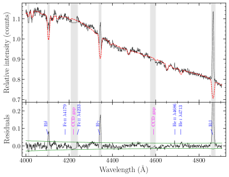
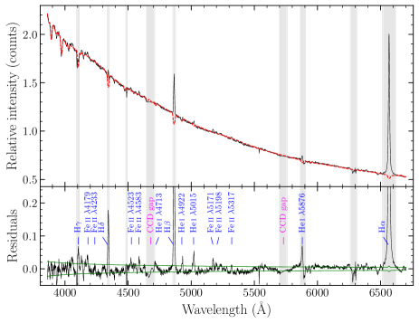
| Parameter | Value |
|---|---|
| (K) | |
| Fe/H | |
| (mag) |
| Date | MJD | EW(Å) | Reference | Phase |
|---|---|---|---|---|
| 1999 September 15 | 51436 | Hénault-Brunet et al. (2012) | 0.194 | |
| 2012 October 13 | 56214 | Sturm et al. (2013) | 0.089 | |
| 2014 June 20 | 56829 | González-Galán et al. 2018 | 0.026 | |
| 2014 June 27 | 56835 | González-Galán et al. 2018 | 0.036 | |
| 2014 July 9 | 56847 | González-Galán et al. 2018 | 0.054 | |
| 2016 November 2 | 57694 | González-Galán et al. 2018 | 0.345 | |
| 2018 December 21 | 58474 | this work | 0.535 | |
| 2020 December 24 | 59207 | this work | 0.654 |
باستخدام آخر طيفين لـ 2dFS 3831 قسنا EW(H )، ووجدنا أنه يساوي Å و Å في 2018 و2020، على التوالي. وتُظهر مقارنة هذه القيم مع قيم EW المقاسة في 1999–2016 (انظر الجدول 4) أن القيمة المطلقة لـ EW(H ) بلغت حدا أدنى في 2018 ثم بدأت تزداد من جديد. وقد تعكس التغيرات في EW تغيرات في حجم/هندسة القرص المحيط بالنجم (قرص الطرد) حول 2dFS 3831 بسبب التغذية الراجعة من النجم النيوتروني المرافق (مثلا Reig, Fabregat & Coe 1997) و/أو بسبب الفقد الكتلي المتغير من نجم Be (مثلا Rajoelimanana, Charles & Udalski 2011).
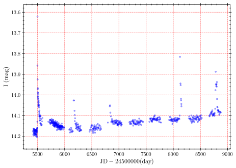
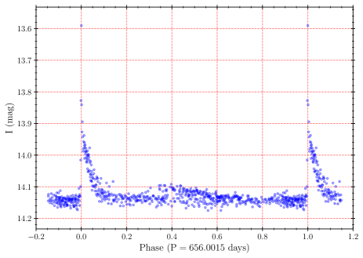
للبحث عن ارتباط محتمل بين التغيرات في EW(H ) والفترة المدارية للثنائي ، أعدنا أولا تقييم باستخدام أحدث منحنى ضوء لـ 2dFS 3831 من تجربة العدسات الثقالية الضوئية22 2 http://ogle.astrouw.edu.pl/ogle4/xrom/xrom.html (OGLE; Udalski 2008). ويغطي منحنى الضوء هذا الفترة الزمنية من 2010 أغسطس 6 إلى 2020 يناير 27 (انظر اللوحة اليسرى من الشكل 7)، وخلالها شهد النظام ستة اندلاعات، لم يُغطَّ واحد منها لأنه وقع في الفجوة بين الأرصاد. لاحظ أن منحنى الضوء يبين اتجاها واضحا يتمثل في ازدياد تدريجي في قدر السكون مع الزمن (وكان González-Galán et al. 2018 قد أشاروا سابقا إلى احتمال وجود هذا الاتجاه). وبعد تصحيح قياسات OGLE الضوئية لهذا الاتجاه (المستوفى بدالة كثيرة حدود من الدرجة الأولى)، استخدمنا طريقة Lafler & Kinman (1965)، التي نُفذت لمشروعنا الخاص بدراسة الثنائيات الكسوفية الطويلة الفترة (Kniazev et al. 2020)، لاشتقاق d مع حقبة الضوء الأعظمي عند JD . وتتفق النتيجة المستحصلة اتفاقا ممتازا مع التقاويم المدارية لـ SXP 1062 من Schmidtke et al. (2019)، المبنية على منحنى ضوء OGLE الذي يغطي أول أربعة اندلاعات مرصودة. ويعرض منحنى الضوء المطوي بـ في اللوحة اليمنى من الشكل 7.
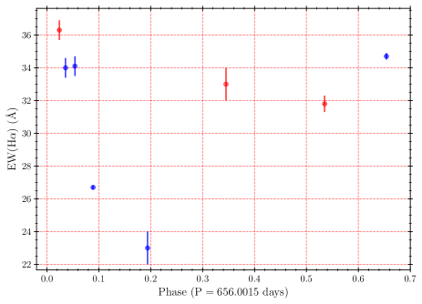
باستخدام التقاويم المدارية المستحصلة لـ SXP 1062، نرسم EW(H ) دالة في الطور المداري (انظر الشكل 8). ويمكن أن نرى أنه بعد مرور النجم النيوتروني بالحضيض ينخفض EW لخط H بنحو 40 في المئة خلال d، ثم يكاد يعود إلى قيمته الأصلية خلال d التالية. ونقترح أن هذا السلوك في EW(H ) يعكس التخريب الجزئي (أو تغيرات في هندسة) القرص المحيط بالنجم الناتج عن مرور النجم النيوتروني خلاله، وعن ترميمه في الأشهر القليلة التالية. كما اتضح أن مرور النجم النيوتروني بالحضيض أدى إلى تغيرات أخرى في طيف 2dFS 3831. وعلى وجه الخصوص، وجدنا أنه في الطيف الأزرق المحصل أقرب ما يكون إلى حقبة الحضيض (الطور 0.036)، يوجد خط انبعاث ملحوظ لـ He ii 4686 (انظر اللوحة اليسرى من الشكل 6)، وقد اختفى في الطيف المحصل بعد نحو أسبوعين (الطور 0.054). ووجدنا أيضا أنه في الطيف المحصل عند أكبر مسافة من الحضيض (الطور 0.654)، ظهرت خطوط انبعاث عديدة لـ Fe ii (انظر اللوحة اليمنى من الشكل 6)، وكانت غائبة في الأطياف الأخرى. ونفسر هذه التغيرات في الطيف على أنها نتيجة لتسخين القرص المحيط بالنجم بسبب مرور النجم النيوتروني خلاله ثم تبرده اللاحق.
وفي سياق متصل، وباستخدام الأطياف الأربعة واسعة المجال المتاحة، قسنا السرعة الشعاعية المركزية الشمسية، ، لـ 2dFS 3831 (انظر الجدول 5). والقيمة المتوسطة لهذه القياسات لـ قريبة من السرعة النظامية لغلاف SNR () ومن سرعة انبعاث H الخلفي ()، مما قد يعني أن الثنائي اللاحق للمستعر الأعظم اكتسب سرعة ركلة منخفضة أو معدومة على امتداد خط بصرنا. وفي الوقت نفسه، يمكن أن نرى أن المقاسة في 2014 يونيو 27 (أي بعيد مرور الحضيض) تختلف عن القيمة المتوسطة بمقدار . وقد يكون هذا بسبب خطأ ما في معالجة البيانات، لكننا نعد ذلك غير محتمل. ونرجح أن الزيادة الملحوظة في السرعة الشعاعية قرب الحضيض تعود إلى الشذوذ المركزي العالي لمدار الثنائي. ويمكن اختبار ذلك بقياسات إضافية للسرعة الشعاعية.
| Date | Phase | |
|---|---|---|
| 2012 October 13 | 0.089 | |
| 2014 June 27 | 0.036 | |
| 2014 July 9 | 0.054 | |
| 2020 December 24 | 0.654 |
أخيرا، نلاحظ أن القيمة العظمى للقيمة المطلقة لـ EW(H ) (المقاسة لـ 2dFS 3831 في 2014) ومخطط EW(H ) لدى Reig et al. (1987) تعني أن الفترة المدارية لـ SXP 1062 ينبغي أن تكون d، وهي أصغر بعامل 4 من القيمة المرصودة. وهذا يشير إلى أن الحجم الشعاعي للقرص لا يحدده التفاعل مع النجم النيوتروني، بل عامل آخر. ونخمن أن الامتداد الاستوائي لقرص الطرد قد يكون معاقا بالضغط الحراري العالي في داخل SNR.
5 المناقشة
إن سرعة التمدد المقاسة للغلاف الضوئي، ، و المظهر الشبكي لهذا الغلاف نموذجيان لـ SNRs في الطور الإشعاعي (أو طور كاسحة الثلج) (مثلا Lozinskaya 1992). وإذا كانت MCSNR J01277332 بالفعل في الطور الإشعاعي، فإن سرعة تمدد موجة انفجار SN تساوي .
لنقارن نسب الخطوط المرصودة المدرجة في الجدول 2 مع النسب النظرية التي حسبها Allen et al. (2008) لنماذج الصدمات ذات وفرات SMC33 3 http://cdsweb.u-strasbg.fr/allen/shock.html (انظر نماذجهم التي تبدأ بالحرف P). وقد بينت مقارنة مفصلة أن نسب الخطوط المرصودة مجتمعة لا تلائم أي نموذج. وعلى وجه التحديد، ففي حين تشير نسب الخطوط الحساسة للسرعة، مثل [O i]/H و[O ii]/H ، بوضوح إلى أن سرعة الصدمة هي ، فإن القيمة العالية لنسبة [O iii]/H تتطلب سرعات صدمية أعلى بكثير. كذلك، وعلى الرغم من أن نسبة [S ii]/H في region A يمكن أن تنتجها صدمات سريعة () ذات قيم عالية للمعلمة المغناطيسية، فإن القيمة الأخفض بكثير لهذه النسبة المقاسة لـ region B لا تلائم أيا من النماذج. وينبغي أن يُلاحظ، مع ذلك، أن نماذج Allen et al. (2008) تأخذ في الاعتبار الإشعاع المؤين الصادر عن الصدمات نفسها فقط (أي الصدمات ذاتية التأين)، ولا تراعي إمكان وجود مصادر أخرى لهذا الإشعاع، مثل النجوم المانحة في الثنائيات السينية العالية الكتلة المرتبطة بـ SNRs و/أو نجوم OB في البيئات القريبة من SNRs.
يمكن تجنب التناقض بين تقديرات سرعة تمدد SNR المبنية على نسب خطوط مختلفة إذا كان بعض الأكسجين في ISM المحلي مؤينا تأينا مزدوجا. ففي هذه الحالة، تستطيع حتى موجة صدمية بطيئة إنتاج خطوط [O iii] قوية (Raymond 1979). وبالمثل، يمكن فهم الانخفاض الشديد في نسبة [S ii]/H إذا كان جزء مهم من الكبريت في الغاز السابق للصدمة مؤينا ضوئيا إلى S++. وإذا كانت MCSNR J01277332 بالفعل في طور إشعاعي، فإن موجة انفجارها البطيئة لا تنتج مقدمة مؤينة ضوئيا ذات شأن (مثلا Dopita & Sutherland 1996). ومن ثم ينبغي افتراض أن الغاز السابق للصدمة مؤين بإشعاع من النجم المركزي لـ SNR و/أو نجوم OB في محيطها (قارن بالقسم 2). وفي هذا السياق، نلاحظ أن قيمة صغيرة لنسبة [S ii]/H وُجدت أيضا في MCSNR J01037201 (Gvaramadze et al. 2019)، وهي إلى جانب MCSNR J01277332 تمثلان بقايا المستعرات العظمى الوحيدتين المعروفتين في SMC المرتبطتين بـ BeXB. وبالنسبة إلى MCSNR J01037201 وجدنا سرعة تمدد مقدارها (Gvaramadze et al. 2019)، وهي منخفضة جدا بحيث لا تفسر وجود خط انبعاث [O iii] 5007 القوي في طيف SNR هذه ([O iii]/H ). ونخمن أن محيط كلتا SNRs هاتين مؤين بنجميهما المركزيين. غير أن هذه الإمكانية يجب إثباتها ببحث لاحق.
إن تقديرنا لسرعة تمدد SNR أقل بعامل ثلاثة من سرعة التمدد التي استنتجها Hénault-Brunet et al. (2012)، ومن تلك الناتجة من نمذجة الطيف السيني لدى Haberl et al. (2012). فلنناقش هذا التباين.
افترض كل من Hénault-Brunet et al. (2012) وHaberl et al. (2012) أن MCSNR J01277332 في طور سيدوف (الأديباتي). ويبدو أن افتراضهما يستند إلى الفرضية المقبولة على نطاق واسع لدى McKee & Cowie (1975) «أن جميع SNRs المرصودة ضوئيا لا تزال في الطور الأديباتي من تمددها»، وهي فرضية طُرحت لتفسير الارتباط بين الانبعاث الضوئي والانبعاث السيني في SNR حلقة الدجاجة. وتقترح هذه الفرضية أن موجة انفجار SN في حلقة الدجاجة تنتشر في وسط غيمي، وأن الانبعاث الضوئي في SNR هذه تنتجه صدمات إشعاعية في كتل غيمية كثيفة، في حين ينشأ الانبعاث السيني في الوسط بين الغيمي الأقل كثافة الذي صدمته موجة الانفجار الأديباتية (McKee & Cowie 1975; Bychkov & Pikelner 1975). وبناء على ذلك، يُفترض أن سرعة تمدد موجة انفجار SN، ، ترتبط بدرجة حرارة البلازما المصدرة للأشعة السينية، ، بالمعادلة الآتية: . [لاحظ أن تطبيق هذه المعادلة على MCSNR J01277332 ذات keV (Haberl et al. 2012) يعطي .] كذلك، وبما أن قياسات السرعة الشعاعية تشير (مثلا Minkowski 1958) إلى أن الغلاف المضيء ضوئيا في حلقة الدجاجة يتمدد بسرعة أقل من تلك المستنتجة من الأرصاد السينية (Tucker 1971)، فقد اقتُرح (McKee & Cowie 1975) أن الكتل الغيمية المصدومة تتسارع بفعل موجة انفجار SN إلى كسر من سرعتها.
وعلى الرغم من أن الاعتبار أعلاه يسمح بتفسير التباين بين تقديرات سرعة تمدد SNR المستندة إلى الأرصاد السينية والضوئية، فإنه يواجه مشكلة في تفسير شكل الخيوط الضوئية، التي هي في الواقع صفائح رقيقة حدبية تُرى بزوايا مختلفة (Hester 1987). ولتجنب هذه المشكلة، اقترح McKee & Cowie (1975) أن الكتل الغيمية يجب أن تمتلك بعدا صغيرا واحدا على الأقل، أي ينبغي أن تكون على هيئة صفائح. غير أنه يبقى غير واضح ما أصل هذه الكتل الغيمية الشبيهة بالصفائح، ولماذا «رتبت نفسها في غلاف كروي جميل إلى هذا الحد» (McCray & Snow 1979) مثلما يُرصد في حلقة الدجاجة (وبعض SNRs الأخرى، مثل Vela وS147، إلخ). والجواب الذي اقترحه McCray & Snow (1979؛ قارن Charles, Kahn & McKee 1985) هو أن حلقة الدجاجة أنتجها النجم السلف للمستعر الأعظم لا المستعر الأعظم نفسه، أي إن SN انفجر في تجويف أخلته الريح النجمية لسلف SN (قارن Gvaramadze et al. 2017).
دُرست هذه الفكرة تفصيلا على يد عدد من الباحثين (مثلا Ciotti & D’Ercole 1988; Tenorio-Tagle et al. 1991; Franco et al. 1991)، الذين نمذجوا انفجار SN في فقاعة مدفوعة بالريح أنشأها النجم السلف لـ SN. وعلى وجه الخصوص، أُظهر أن تطور موجة انفجار SN يعتمد على كتلة الغلاف المحيط بالفقاعة. وفي الحالة التي تكون فيها كتلة هذا الغلاف المدفوع بالريح (WDS) أكبر بأكثر من 50 مرة من كتلة مقذوفات SN، ، تلتحم موجة انفجار SN مع WDS، وتتخطى SNR الناتجة طور سيدوف وتدخل مباشرة في الطور الإشعاعي (مثلا Franco et al. 1991)، أي إن تساوي سرعة تمدد الغلاف المضيء ضوئيا . وفي هذه العملية يكتسب WDS السابق (الذي أصبح الآن غلاف SNR) طاقة حركية مقدارها ، حيث إن هي كتلة WDS (أي كتلة غاز ISM المحتواة أصلا داخل كرة نصف قطرها )، و هو نصف قطر WDS، و هي كتلة ذرة الهيدروجين، و هي الكثافة العددية لـ ISM المحلي، و هي طاقة موجة انفجار SN (Franco et al. 1991). وعلاوة على ذلك، يؤدي اصطدام موجة انفجار SN مع WDS إلى تطور عدم استقرار Rayleigh-Taylor، مما ينتج تشوهات قبيبية في الغلاف تحدد، عند رؤيتها من زوايا مختلفة، المظهر الشبكي لبعض SNRs، مثل Vela وS147 (Gvaramadze 1999, 2006). ومن جهة أخرى، قد تكون الطبقات الداخلية لـ WDSs المصدومة حارة بما يكفي لإنتاج انبعاث سيني لين (مثلا Tenorio-Tagle et al. 1991).
استنادا إلى ما سبق، نقترح أن MCSNR J01277332 هي نتيجة انفجار SN في تجويف محاط بـ WDS عظيم الكتلة. ويقدم هذا المقترح تفسيرا طبيعيا لتعايش الغلاف الضوئي البطيء التمدد والانبعاث السيني اللين داخله. وبافتراض أن حجم SNR يساوي حجم WDS، أي (بحيث تكون كتلة غلاف SNR مساوية لكتلة WDS الموجود سابقا)، وباعتماد و ، نجد أن و. وبناء على ذلك، فإن عمر MCSNR J01277332 يساوي تقريبا زمن عبور فقاعة الريح، أي ، حيث إن هي سرعة مقذوفات SN ذات الكتلة . ولتقدير ، نفترض أن انفجار SN كان متماثلا (أي لم تُمنح ركلة ولادية للنجم النيوتروني حديث التكون)، وأن الشذوذ المركزي المداري الحالي، ، لـ SXP 1062 لم يتغير كثيرا منذ انفجار SN. وفي هذه الحالة، نجد (مثلا Iben & Tutukov 1997) أن ، حيث إن و هما كتلتا 2dFS 3831 ونجمه النيوتروني المرافق، على التوالي. وباعتماد (Hénault-Brunet et al., 2012) و ، نجد أن و yr. غير أننا ننبه إلى أن هذه التقديرات ينبغي أن تعد فقط قيما تقريبية من رتبة المقدار.
6 الخلاصة
قدمنا نتائج الأرصاد المطيافية الضوئية لـ SNR MCSNR J01277332 في SMC والنجم المانح للكتلة، 2dFS 3831، في BeXB المرتبطة بها SXP 1062، وقد أُجريت باستخدام التلسكوب الجنوب أفريقي الكبير (SALT). وقد أتاحت لنا مطيافية SALT ذات الشق الطويل لغلاف SNR قياس سرعة تمدده البالغة ، وهي قيمة نموذجية لـ SNRs في الطور الإشعاعي (طور كاسحة الثلج). وأظهرت مقارنة نسب الخطوط في طيف غلاف SNR مع مكتبة شدات الخطوط لنماذج الصدمات (MAPPINGS III) أن نسب الخطوط المرصودة مجتمعة لا تلائم أي نموذج. واقتُرح أن هذه النسب يمكن تفسيرها إذا كان ISM المحلي مؤينا بفعل 2dFS 3831 و/أو نجوم OB في جوار SNR. وللتوفيق بين تعايش الغلاف الضوئي البطيء التمدد لـ SNR والانبعاث السيني اللين داخله، اقتُرح أن انفجار SN حدث داخل تجويف أخلته ريح النجم السلف لـ SN، وأن التجويف عند لحظة انفجار SN كان محاطا بغلاف عظيم الكتلة (أكبر كتلة بأكثر من 50 مرة من مقذوفات SN). ويعني هذا المقترح أن عمر SNR هو yr.
كشفت الأرصاد المطيافية لـ 2dFS 3831 أن EW لخط انبعاث H انخفض بنسبة نحو 40 في المئة خلال d بعد مرور النجم النيوتروني بالحضيض، ثم عاد تقريبا إلى قيمته الأصلية خلال d التالية. وترافق هذه التغيرات في EW تغيرات أخرى في المظهر الطيفي لنجم Be: ففي الطيف المحصل بعد الحضيض بقليل، كان هناك خط انبعاث ملحوظ لـ He ii 4686، اختفى خلال الأسبوعين التاليين تقريبا. وفسرنا هذه التغيرات بأنها نتيجة تفاعل النجم النيوتروني مع القرص المحيط بالنجم، مما أدى إلى اضطراب مؤقت وتسخين للقرص. كما وجدنا مؤشرا على أن النجم النيوتروني يدور حول 2dFS 3831 في مدار عالي الشذوذ المركزي، لكن ثمة حاجة إلى أطياف إضافية عالية الاستبانة تغطي كل الأطوار المدارية للنظام الثنائي لتأكيد ذلك.
7 الشكر والتقدير
يستند هذا العمل إلى أرصاد حُصل عليها بالتلسكوب الجنوب أفريقي الكبير (SALT)، ضمن البرامج 2012-1-RSA_UKSC-003، 2014-1-RSA_OTH-022، 2016-2-SCI-044، 2018-1-MLT-008 و2020-1-MLT-003. ويقر VVG بالدعم من مؤسسة العلوم الروسية بموجب المنحة 19-12-00383. ويقر A.Y.K. بالدعم من مؤسسة الأبحاث الوطنية (NRF) في جنوب أفريقيا. وتقر LMO بالدعم الجزئي من برنامج الحكومة الروسية للنمو التنافسي في جامعة قازان الفدرالية. وقد استفاد هذا البحث من قاعدة بيانات SIMBAD، التي يديرها CDS، ستراسبورغ، فرنسا.
8 إتاحة البيانات
ستتاح البيانات التي يقوم عليها هذا المقال عند طلب معقول إلى المؤلف المسؤول عن المراسلة.
References
- [1] Allen M. G., Groves B. A., Dopita M. A., Sutherland R. S., Kewley L. J., 2008, ApJS, 178, 20
- [2] Buckley D. A. H., Swart G. P., Meiring J. G., 2006, in Stepp L. M., ed., Proc. SPIE Conf. Ser. Vol. 6267, Ground-based and Airborne Telescopes. SPIE, Bellingham, p. 62670Z
- [3] Burgh E. B., Nordsieck K. H., Kobulnicky H. A., Williams T. B., O’Donoghue D., Smith M. P., Percival J. W., 2003, in Iye M., Moorwood A. F. M., eds, Proc. SPIE Conf. Ser. Vol. 4841, Instrument Design and Performance for Optical/Infrared Ground-based Telescopes. SPIE, Bellingham, p. 1463
- [4] Bychkov K. V., Pikelner S. B., 1975, Soviet Astron. Lett., 1, 14
- [5] Charles P. A., Kahn S. M., McKee C. F., 1985, ApJ, 295, 456
- [6] Cioni M.-R. L., 2009, A&A, 506, 1137
- [7] Ciotti L., D’Ercole A., 1989, A&A, 215, 347
- [8] Corbet R. H. D. et al., 2016, ApJ, 829, 105
- [9] Crawford S. M. et al., 2010, in Silva D. R., Peck A. B., Soifer B. T., Proc. SPIE Conf. Ser. Vol. 7737, Observatory Operations: Strategies, Processes, and Systems III. SPIE, Bellingham, p. 773725
- [10] Dopita M. A., Sutherland R. S., 1996, ApJSS, 102, 161
- [11] Fesen R. A., Blair W. P., Kirshner R. P., 1985, ApJ, 292, 29
- [12] Franco J., Tenorio-Tagle G., Bodenheimer P., Różyczka M., 1991, PASP, 103, 803
- [13] Frew D. J., Parker Q. A., 2010, PASA, 27, 129
- [14] Fulmer L. M., Gallagher J. S., Hamann W.-R., Oskinova L. M., Ramachandran V., 2020, A&A, 633, A164
- [15] Georgelin Y. M., Georgelin Y. P., Laval A., Monnet G., Rosado M., 1983, A&AS, 54, 459
- [16] González-Galán A., Oskinova L. M., Popov S. B., Haberl F., Kühnel M., Gallagher J., Schurch M. P. E., Guerrero M. A., 2018, MNRAS, 475, 2809
- [17] Grassitelli L., Fossati L., Langer N., Simón-Díaz S., Castro N., Sanyal D., 2016, A&A, 593, A14
- [18] Gvaramadze V. V., 1999, A&A, 352, 712
- [19] Gvaramadze V. V., 2006, A&A, 454, 239
- [20] Gvaramadze V. V. et al., 2017, Nat. Astron., 1, 0116
- [21] Gvaramadze V. V., Kniazev A. Y., Oskinova L. M., 2019, MNRAS, 485, L6
- [22] Haberl F., Sturm R., 2016, A&A 586, A81
- [23] Haberl F., Sturm R., Filipovíc M. D., Pietsch W., Crawford E. J., 2012, A&A, 537, L1
- [24] Heinz S. et al., 2013, ApJ, 779, 171
- [25] Hénault-Brunet V. et al., 2012, MNRAS, 420, L13
- [26] Hester, J. J., 1987, ApJ, 314, 187
- [27] Hilditch R. W., Howarth I. D., Harries T. J., 2005, MNRAS, 357, 304
- [28] Ho W. C. G., Wijngaarden M. J. P., Andersson N., Tauris T. M., Haberl F., 2020, MNRAS, 494, 44
- [29] Iben I., Tutukov A. V., 1997, ApJ, 491, 303
- [30] Kniazev A. Y., Pustilnik S. A., Grebel E. K., Lee H., Pramskij A. G., 2004, ApJS, 153, 429
- [31] Kniazev A. Y. et al., 2008, MNRAS, 388, 1667
- [32] Kniazev A. Y., Malkov O. Y., Katkov I. Y., Berdnikov L. N., 2020, RAA, 20, 119
- [33] Kobulnicky H. A., Nordsieck K. H., Burgh E. B., Smith M. P., Percival J. W., Williams T. B., O’Donoghue D., 2003, in Iye M., Moorwood A. F. M., eds, Proc. SPIE Conf. Ser. Vol. 4841, Instrument Design and Performance for Optical/Infrared Ground-based Telescopes. SPIE, Bellingham, p. 1634
- [34] Kopsacheili M., Zezas A., Leonidaki I., 2020, MNRAS, 491, 889
- [35] Lafler J., Kinman T. D., 1965, ApJS, 11, 216
- [36] Lanz T., Hubeny I., 2003, ApJS, 146, 417
- [37] Lanz T., Hubeny I., 2007, ApJS, 169, 83
- [38] Leonidaki I., Boumis P., Zezas A., 2013, MNRAS, 429, 189
- [39] Linares M. et al., 2010, ApJ, 719, L84
- [40] Lozinskaya T. A., 1992, Supernovae and Stellar Wind in the Interstellar Medium. Am. Inst. Phys., New York
- [41] Maitra C. et al., 2019, MNRAS, 490, 5494
- [42] Mathewson D. S., Clarke J. N., 1973, ApJ, 180, 725
- [43] McCray R., Snow T. P., Jr, 1979, ARA&A, 17, 213
- [44] McKee C. F., Cowie L. L., 1975, ApJ, 195, 715
- [45] Minkowski R., 1958, Rev. Mod. Phys., 30, 1048
- [46] Nigra L., Gallagher J. S., Smith L. J., Stanimirović S., Nota A., Sabbi E., 2008, PASP, 120, 972
- [47] O’Donoghue D. et al., 2006, MNRAS, 372, 151
- [48] Rajoelimanana A. F., Charles P. A., Udalski A., 2011, MNRAS, 413, 1600
- [49] Ramachandran V., et al., 2019, A&A, 625, A104
- [50] Raymond J. C., 1979, ApJS, 39, 1
- [51] Reig P., Fabregat J., Coe M. J., 1997, A&A, 322, 193
- [52] Rosado M., Georgelin Y. M., Laval A., Monnet G., 1983, in Gorenstein P., Danziger I. J., eds, Proc. IAU Symp. 101, Supernova Remnants and Their X-ray Emission. Reidel, Dordrecht, p. 567
- [53] Schmidtke P. C., Cowley A. P., Udalski A., 2012, Astron. Telegram, 4596, 1
- [54] Schmidtke P. C., Cowley A. P., Udalski A., 2019, The Astronomer’s Telegram, 13426, 1
- [55] Seward F. D., Charles P. A., Foster D. L.,Dickel J. R., Romero P. S., Edwards Z. I., Perry M., Williams R. M., 2012, ApJ, 759, 123
- [56] Sturm R., Haberl F., Oskinova L. M., Schurch M. P. E., Hénault-Brunet V., Gallagher J. S., Udalski A., 2013, A&A, 556, A139
- [57] Tauris T. M., van den Heuvel E. P. J., 2006, in LewinW. H. G., van der Klis M., eds, Formation and Evolution of Compact Stellar X-ray Sources, Compact stellar X-ray sources. Cambridge Univ. Press, Cambridge, p. 623
- [58] Tenorio-Tagle G., Różyczka M., Franco J., Bodenheimer P., 1991, MNRAS, 251, 318
- [59] Tucker W. H., 1971, Science, 172, 372
- [60] Udalski A., 2008, Acta Astron., 58, 187
- [61] van Soelen B., Komin N., Kniazev A., Väisänen P., 2019, MNRAS, 484, 4347
- [62] Wang W., Tong H., 2020, MNRAS, 492, 762